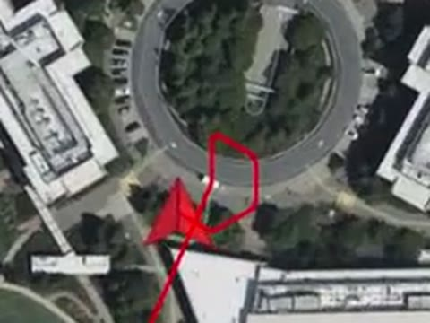
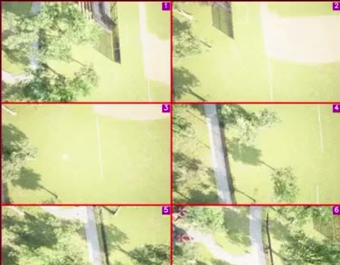
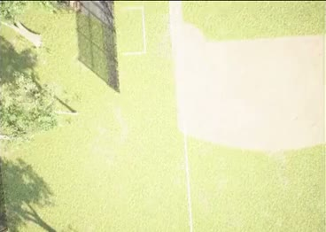
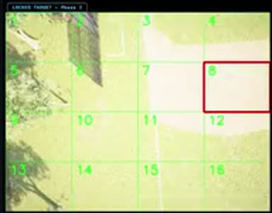
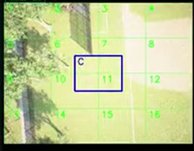
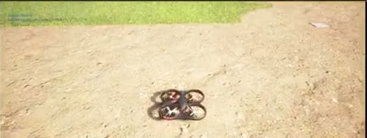
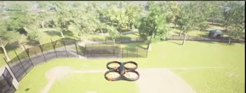
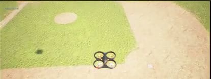
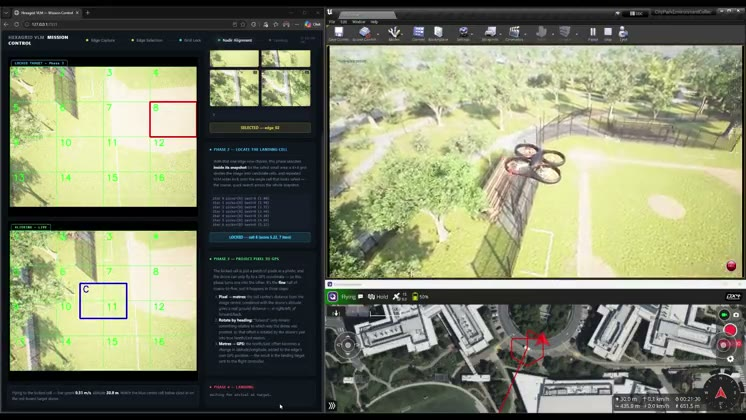

Aerial robotics · VLM in the loop
Hexagrid VLM: Autonomous Landing-Site Selection
Using a vision-language model to select, refine, and navigate to a landing site in previously unsurveyed terrain.
A drone explores an unknown area by sampling six viewpoints along a hexagonal path. A local vision-language model compares the views and selects a promising direction. The system then repeatedly refines the selected view using a 4×4 grid, locks onto a target cell through temporal voting, converts that cell into a GPS target, and autonomously lands using PX4 SITL in AirSim.
Demonstrated in simulation: Microsoft AirSim with PX4 SITL and a local VLM (Qwen2.5-VL).
The research question
How do you turn a VLM’s visual judgment into an executable landing decision?
Vision-language models can describe scenes and reason about visual content, but an aircraft cannot safely act on a single textual answer. This project explores a simple idea:
Use the VLM for semantic judgment, then add structure around that judgment before allowing the aircraft to act.
The system therefore breaks landing-site selection into four stages: Compare → Refine → Ground → Land.

6 aerial views
VLM comparison
4×4 target refinement
Temporal confidence lock
Pixel → GPS
Autonomous landing
All frames are from the demonstrated run.
The core idea
From a Vague Visual Judgment to a Precise Landing Target
Six viewpoints are captured around the vehicle. The VLM sees all six views together and selects the most promising edge.
The selected image is divided into a 4×4 grid. The VLM repeatedly identifies promising cells until one cell consistently wins.
The cell’s pixel offset becomes a ground displacement using camera geometry and altitude, then a GPS coordinate using the vehicle heading.
PX4 navigates toward the target. Once the vehicle reaches and settles over it, the landing command is triggered automatically.
Phase 1
Make the VLM Compare Alternatives
The drone flies a hexagonal pattern and captures one aerial view at each vertex.
Instead of asking the VLM to judge six images independently, the six views are composited into a single labelled mosaic. The VLM is then asked to compare the alternatives and identify the most promising edge, in one inference.
The important idea is not simply “use a VLM”. It is:
Give the model the alternatives simultaneously, so the task becomes comparative rather than six independent judgments.
edge_02Six viewpoints → one comparative VLM decision. A design choice for comparative reasoning, not a guarantee that the choice is correct.
Phase 2
Don’t Trust a Single Answer
After selecting the promising view, the system overlays a numbered 4×4 grid and queries the VLM repeatedly for the most suitable landing cell. Instead of committing to the first response, each cell accumulates temporal evidence:
- repeated selections increase its score
- scores decay over time
- inconsistent one-off selections fade away
- a cell is locked only after crossing a predefined threshold
Key insight
A single VLM response is treated as a hypothesis, not a command.
This is designed to reduce dependence on any single VLM response. It is not a formal safety guarantee.
- 12345678910111213141516Round 1cell 8: 1.00
- 12345678910111213141516Round 2cell 8: 1.90
- 12345678910111213141516Round 3cell 8: 2.71
- 12345678910111213141516Round 4cell 8: 3.44
- 12345678910111213141516Round 5cell 8: 4.10
- 12345678910111213141516Round 6cell 8: 4.69
- 12345678910111213141516Round 7cell 8: 5.22
- Lockcell 8 · score 5.22 · 7 hits
Repeated agreement → stable target. Scores are from the vote history of the demonstrated run, where cell 8 was picked in every round.
Phase 3
Ground the Visual Decision in the World
The VLM identifies a cell in image space, but the aircraft needs a location in the world. The system converts the selected cell’s offset from the camera centre into a metric ground displacement using the camera field of view, vehicle altitude and image geometry.
That displacement is rotated by the current vehicle heading into a north/east offset and combined with the vehicle’s position to produce a target coordinate.
Semantic decision → geometric location.
Phase 4
From Target Coordinate to Touchdown
Once the target coordinate is generated, the aircraft navigates toward it using PX4. Telemetry (ground speed and altitude) is used to determine when the vehicle has arrived and settled over the target, and the landing command is then triggered automatically.
There is no manual target selection or landing command in the demonstrated sequence.
- Target locked
- Navigate

- Align
- Descend

- Touchdown
The full pipeline
One Loop: See → Decide → Ground → Act
See
- Unknown terrain
- Hexagonal exploration
- 6 aerial snapshots
Decide
- VLM comparative selection
- Winning snapshot
- 4×4 grid
- Temporal voting
- Locked cell
Ground
- Pixel-to-ground geometry
- GPS target
Act
- PX4 navigation
- Automatic landing
Why the system is structured this way
Each Stage Removes a Different Ambiguity
Which view?
The six-view mosaic lets the VLM compare candidate directions rather than judging each view in isolation.
Where in the view?
The 4×4 grid converts a broad scene-level decision into a localized target.
Can the decision persist?
Repeated VLM judgments provide evidence over time rather than relying on one response.
Where in the world?
Camera geometry converts an image-space decision into a physical navigation target.
Mission control
Making the Decision Process Observable
The system exposes each stage of the mission through a local mission-control interface, and pushes the current overlay and status into the QGroundControl video feed. The dashboard shows:
- current mission phase
- captured viewpoints
- VLM selection
- grid-lock history
- live nadir view and selected landing cell
- vehicle state during alignment and landing
The purpose is observability: the operator can see how the visual decision evolves instead of receiving only a final landing command.


Engineering lessons
Lesson
A Camera Assumption Can Invalidate the Entire Geometry Pipeline
An incorrect AirSim camera configuration produced a “down” camera that was not actually looking straight down. The images showed the horizon and the vehicle’s own rotors, revealing that the assumed camera geometry was wrong.
This mattered because the pixel-to-ground conversion depends on a true nadir view. The configuration was corrected with a −90° pitch and a stabilized gimbal, so the camera stays aligned with the ground.
Validate the physical meaning of the sensor frame before trusting downstream geometry.
Lesson
Closing the Loop Without a Custom Handshake
The flight controller and the Python mission logic run separately, and the flight controller does not provide a dedicated “landed” message.
Instead of adding another dependency between the two, the mission logic uses the simulator’s vehicle state to determine arrival and touchdown. This keeps the mission state grounded in the vehicle’s observed state.
Connection to Survey-RAG
From Finding a Place to Landing There
Hexagrid VLM complements my Survey-RAG work, and picks up from its arrival hold.
“Where did I see the thing I’m looking for?”
Hexagrid VLM
“Now that I’m there, where should the aircraft land?”
- Survey
- Retrieve
- Relocate
- Select landing site
- Land
Blue steps: Survey-RAG. Dark steps: Hexagrid VLM. Together they explore different stages of an aerial autonomy loop.
What I learned
What This Experiment Taught Me
A strong visual model does not automatically produce a reliable control signal. The system needs mechanisms that turn uncertain model outputs into decisions that can be checked, repeated and grounded.
A VLM can identify a visually meaningful region, but the aircraft ultimately needs a physical coordinate. The pixel-to-ground stage is the bridge between perception and motion.
A small camera-frame error can invalidate every geometric calculation downstream. Robot intelligence depends on the model and on the physical assumptions around it.
What this project demonstrates
Demonstrated System
Vision-language reasoning runs locally, without sending imagery outside the machine.
Six aerial viewpoints are compared as a single visual context.
Repeated grid predictions are accumulated before locking a target.
Image-space decisions are converted into physical coordinates.
PX4 navigates to the selected target and landing is triggered without manual intervention.
The complete pipeline is demonstrated using AirSim with PX4 SITL.
From visual reasoning to physical action
A VLM Does Not Need to Control the Aircraft Directly
Hexagrid VLM explores a simple principle: the model provides the semantic judgment, while temporal reasoning, geometry and flight-control logic turn that judgment into an executable action.
This is the direction I am interested in for embodied AI: models that do not just describe the world, but participate in a grounded perception → decision → action loop.